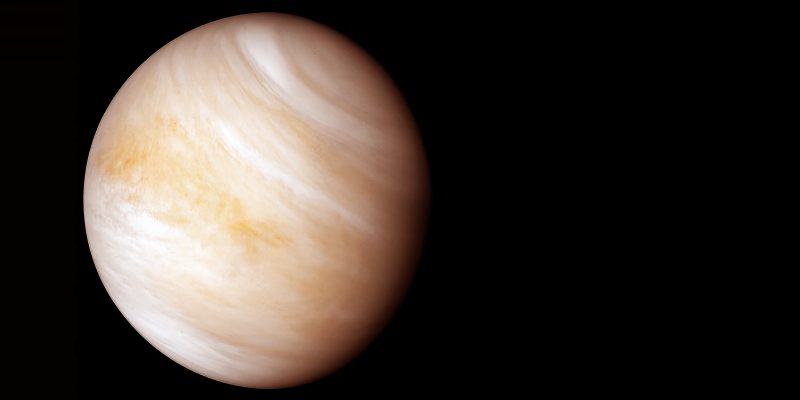

|  |
|
Segundo planeta desde el Sol y nuestro vecino más cercano, conocido como el "gemelo de la Tierra" por su tamaño y masa, pero es el planeta más caliente de nuestro sistema solar debido a su densa atmósfera de dióxido de carbono. Su superficie, cubierta por nubes de ácido sulfúrico, es tan caliente que puede fundir el plomo y tiene miles de volcanes activos. |